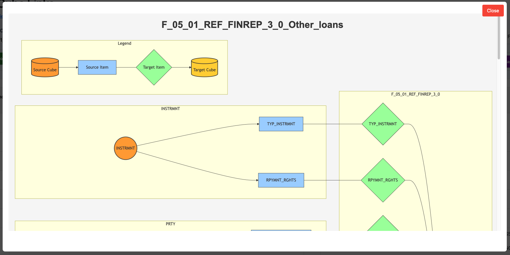

Edit Links Features Guide
Feature Overview
The Edit Links Features provide an integrated system for managing metadata relationships between data cubes, variables, and dimension values. These interactive editors allow you to create, modify, and visualize the connections that define how your regulatory data structures relate to each other.
Purpose
The Edit Links features serve as your metadata relationship management center, providing comprehensive tools for defining and managing data relationships at multiple levels. The system allows you to define cube-level relationships that specify which data cubes can be joined together, create variable-level mappings that determine which columns should be linked between cubes, and establish value-level conversions that map individual dimension values for code list transformations. You can generate visual relationship diagrams that display network graphs showing cube connections, and the system provides seamless workflow integration so you can edit metadata without leaving your workflow.
This feature is essential for organizations processing regulatory data where precise metadata relationships ensure accurate transformations and reporting.
Getting Started
Prerequisites
Before using Edit Links, ensure you have completed Step 1 of your workflow (whether ANCRDT, DPM, or Main), have a database with cube definitions populated, possess an understanding of the data relationships needed for your use case, and have business logic documentation available for reference when creating mappings.
Accessing Edit Links Features
Within Workflows (Recommended)
Navigate to Task 2: Review in your workflow. You'll find three embedded editor tabs:
- Edit Cube Links
- Edit Cube Structure Item Links
- Edit Member Links
Standalone URLs
- Edit Cube Links:
/pybirdai/edit-cube-links/ - Edit Cube Structure Item Links:
/pybirdai/edit-cube-structure-item-links/ - Edit Member Links:
/pybirdai/edit-member-links/

The screenshot shows the Task 2 Review page with Filter Review, Join Metadata Review, and Edit Joins Metadata sections.
Step-by-Step Guide
Understanding the Three Link Types
The Edit Links system uses a hierarchical structure with three distinct types of links that build upon each other. Cube Links operate at the table level and establish relationships between data cubes, such as linking the INSTRMNT cube to the CNTRPRTY cube. Cube Structure Item Links work at the variable level to specify which columns should be joined between linked cubes, for example linking INSTRMNTID to INSTRMNTID, and these require an existing Cube Link to function. Member Links operate at the value level to map individual dimension values, such as mapping "US" to "USA", and these require an existing Cube Structure Item Link.
It's important to note that you must create links in the proper order: Cube Links first, then Structure Item Links, then Member Links, as each level depends on the existence of the previous level.
Working with Cube Links
Creating a Cube Link
- Scroll to "Add New Cube Link" section
- Select Primary Cube (source cube)
- Select Foreign Cube (target cube)
- Enter Join Identifier: Use descriptive names like
INSTRMNT_CNTRPRTY_JOIN - Add Description (optional but recommended)
- Click "Add" - Link appears immediately
Example:
- Primary Cube:
INSTRMNT - Foreign Cube:
CNTRPRTY - Join Identifier:
INSTRMNT_CNTRPRTY_JOIN - Description: "Links instruments to counterparty information"
Filtering and Managing Links
Filters: Use Foreign Cube and Join Identifier dropdowns to narrow your view. Filters cascade intelligently.
Deleting: Click Delete button. Warning: Also removes all associated structure item and member links.
Visualizing Cube Relationships
Network Graph
Generate interactive diagrams showing how cubes connect:
- Navigate to Cube Links Visualization section
- Select Foreign Cube and Join Identifier from dropdowns
- Click "View Network Graph"

Understanding the Graph:
- Legend: Source Cube → Source Item → Target Item → Target Cube
- Each relationship grouped in its own panel
- Arrows show data flow direction
- Controls: Zoom with mouse wheel, pan by dragging, export to save
Use Cases:
- Verify all required relationships exist
- Identify missing connections
- Understand data flow at a glance
- Document metadata architecture
Working with Cube Structure Item Links
Define which variables should be joined between linked cubes.
Creating a Structure Item Link
- Select Cube Link (parent relationship)
- Select Primary Variable from source cube
- Select Foreign Variable from target cube
- Review compatibility warnings if any
- Click "Add"
Example:
- Cube Link:
INSTRMNT_CNTRPRTY_JOIN - Primary Variable:
CNTRPRTY_ID(from INSTRMNT) - Foreign Variable:
CNTRPRTY_ID(from CNTRPRTY)
Features:
- Filters cascade - selecting a cube link updates variable dropdowns
- System warns about incompatible data types
- Deleting removes associated member links
Working with Member Links
Map individual dimension values for code list conversions.
Creating a Member Link
- Select Cube Structure Item Link
- Search and select Primary Member (source value) - Type to search
- Search and select Foreign Member (target value)
- Click "Add"
Example Mappings:
One-to-One: US → USA (format standardization)
Many-to-One:
PROD_001(Savings A) →SAVINGSPROD_002(Savings B) →SAVINGS
Handling Unmapped Values
Option 1: Create "OTHER" category and map exceptions
Option 2: Handle in transformation code with conditionals
Option 3: Reject records with unmapped values
Choose based on your regulatory requirements and data quality standards.
Integration with Workflows
Step 2 Review Page Structure
Tab 1: Statistics Dashboard - Overview of auto-generated metadata
Tab 2: Edit Cube Links - Cube-level relationships
Tab 3: Edit Cube Structure Item Links - Variable-level mappings
Tab 4: Edit Member Links - Value-level mappings
Tab 5: Cube Link Diagram - Visual network graph
Workflow Benefits
- Auto-save: Changes persist immediately via AJAX
- No reloads: Instant updates without page refreshes
- Context maintained: Stay within workflow, no page jumping
Refinement Process
- Review auto-generated results (Tab 1)
- Add/modify cube links (Tab 2)
- Refine structure item links (Tab 3)
- Complete member link mappings (Tab 4)
- Verify with visual diagram (Tab 5)
- Proceed to Step 3
Best Practices
Naming Conventions
- Use descriptive join identifiers:
SOURCE_TARGET_JOIN - Uppercase with underscores convention
- Document purpose in description field
Creation Order
- Create Cube Links first
- Add Cube Structure Item Links
- Define Member Links last
- Verify prerequisites exist before creating
Variable Selection
- Link variables representing the same concept
- Match data types (string-to-string, integer-to-integer)
- Test with representative data before production
Member Link Strategy
- Map all values in actual data, not just samples
- Document complex conversion rationale
- Monitor unmapped values in production
Performance
- Use filters aggressively for large datasets
- Ensure database indexes on foreign key columns
Troubleshooting
Variables Not Appearing: Verify parent relationship selected first, refresh page, clear browser cache
Incompatible Domain Warnings: Review data types carefully - warnings are advisory but genuine incompatibilities cause runtime errors
Duplicate Warnings: Use filters to locate existing link, delete old link before creating new one
Deletion Failures: Cascade delete should handle dependencies automatically. If it fails, manually delete child records first (member links → structure item links → cube link)
Performance Issues: Use aggressive filtering, ensure database indexes exist on CUBELINK, CUBESTRUCTUREITEMLINK, and MEMBER_LINK tables
Conclusion
The Edit Links Features provide comprehensive metadata relationship management for regulatory data processing. The hierarchical structure ensures referential integrity, while embedded workflow integration allows seamless metadata refinement. Combined with filtering, search capabilities, and visual diagrams, these features give you complete control over your metadata architecture.
Next Steps
After refining your metadata links, continue with related workflow processes. Return to the Main Workflow Guide to see how your cube and member links integrate into the FINREP reporting workflow. Review the Dataset Transformation Guide to understand how these link editing features fit into the AnaCredit workflow Steps 0-3.
Support Resources
- Eclipse EFBT Wiki: https://github.com/eclipse/efbt/wiki
- Getting Started: https://github.com/eclipse-efbt/efbt/wiki/Getting-Started-with-PyBIRD-AI
- Technical Support: https://github.com/eclipse/efbt/issues
- Community Chat: Eclipse Chat
- Email: efbt-dev@eclipse.org